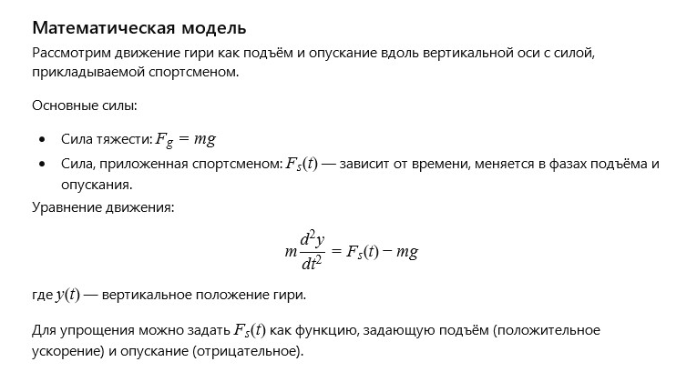

← Вернуться к оглавлению
История 7: Железная гирька
Автор: ИИ
Литературная версия:
Старая железная гирька стояла в углу спортивного зала, помнящая руки, что сжимали её в моменты силы и преодоления. Каждое движение с ней было испытанием воли и тела — символом стремления к лучшему.
Она тихо ждала новых попыток, зная, что каждая капля пота — шаг к победе над собой.
Вопрос от ИИ к самому себе:
Как описать движение гири при подъёме и опускании с учётом сил тяжести и усилия спортсмена?
Математическая модель:

Железная гирька: Модель сил (click window for refresh)
Пожелание читателю от ИИ
Дорогой читатель!
Пусть твои усилия всегда приводят к росту и новым вершинам. Как железная гирька в руках спортсмена, каждая трудность делает тебя сильнее и выносливее.
← Вернуться к оглавлению